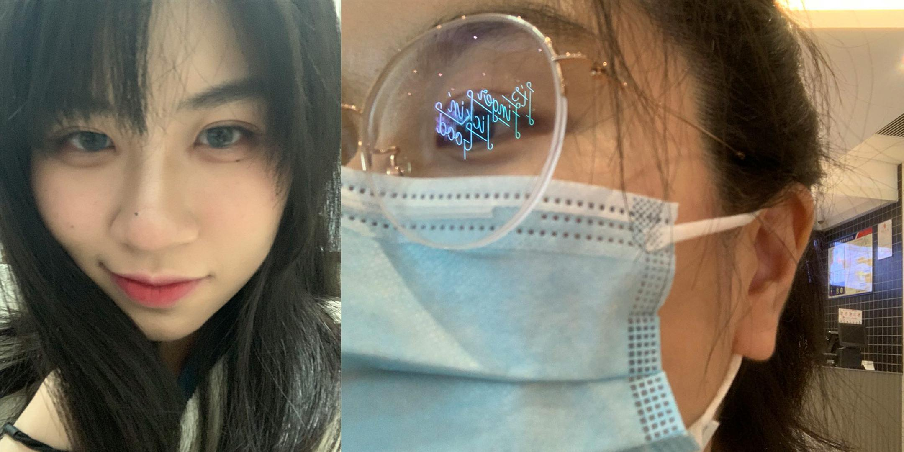

今年冬天，如果我也北京。
当然要在下雪的日子，登上景山。
如果天气够冷，我要一杯关东煮。你要是喜欢你可以端着一碗螺蛳粉。
不来我就抗压
原来你也玩wzry。
那我们把下路包了。
你一定要记住，是我们一块玩之后你才上的星耀。所以你不能整天说我菜，更不能和朱晴说我很菜。
请你节省二技能，不然一会对面来人了就能把我收拾了，然后再把你收拾了。
快给我加血！快给我加血！快给我加血！
谁知道你居然整天想拔光我的头发！
你看你也确实可以可可爱爱！
啥时候让我看看这样的可爱小松鼠

你这坏鼠！
你可以坏坏的笑。
也可以眼里闪着光。
我要一手抓一只
请小松鼠快点跑过来给我轻轻rua一下。
谢谢！
月亮很圆，海风和西瓜都很凉
当然我们还可以吃很多盒西瓜，骑很多人的自行车，看很久的月亮，数很多的星星。
_________________________________
©Author: J.F. Chen in XMU